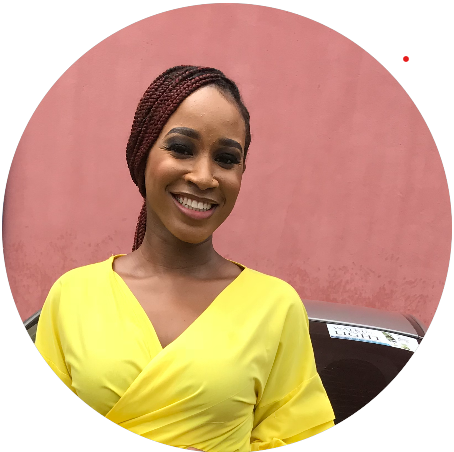

Abigail Akpan

Summary
Hi! I'm a hard-working young woman with a passion for coding. One of my corporate strengths is adapting to and growing in new work environments. I pride myself in being obsessive about task completion, and this is why I'm a good fit for you to hire.
Education
Bachelor of Science, Biochemistry - University of Calabar (2017 - 2021)
Work experience
Content writer at Upwork (January 2023 - Present)
- Produce high-quality, engaging, and original written content for articles, blogs
- Conducted thorough research on assigned topics to gather relevant information and ensure accurate and well-informed content.
- Developed outlines and plans for content pieces, considering target audience, keywords, SEO optimization and content goals.
Sales Representative at Hansun Chemicals (February - May 2022)
- Prospected and generated new leads through various channels, including cold calling, meetings, referrals, and networking events.
- Conducted product presentations and demonstrations to potential clients, showcasing key features and benefits.
- Negotiated contracts and pricing agreements with clients, ensuring favorable terms and maximizing revenue opportunities.
Skills
- Content writing
- Time-management
- Research
- Office management tools
- Communication skills
- Problem solving
- Organizational skills
- Relationship building
- HTML
Other
For more contact info, you can check My Hobbies and Contact Me pages.